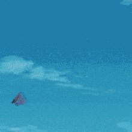

Saiyan nacido en el planeta Vegeta en el año 748 del calendario del dragon, actualmente vivo en la tierra desde que fui enviado en una nave escpacial, con menos de un año de edad. Soy una persona muy simpática pero no dudaré en emplear la fuerza para defender a la tierra o a a mis amigos, afán por entrenar y hacerse más fuerte.
Pues la verdad que no tengo móvil ni redes sociales
Así que echa la vista al cielo e igual me ves volando
Nula, pero me he enfrentado con enemigos muy fuertes y he hecho grandes amistades.
Freezer
Celula
Buu